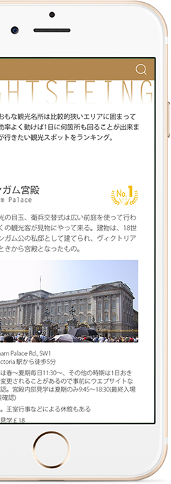

<!DOCTYPE html>
<html lang="ja">
<head>
  <meta charset="UTF-8">
  <title>LOVE LONDON</title>
  <link rel="stylesheet" href="css/reset.css">
  <link rel="stylesheet" href="css/style.css">
</head>
<body>
  <div id="wrapper">
    <section id="pageTop">
      <h1></h1>
      <div class="download">
        
        
      </div>
    </section><!-- /#pageTop -->
    <section id="concept">
      
      <h3></h3>
      
      <p>世界の最先端を行く都市イギリス・ロンドン<br>ファッション、音楽、アートなど移り変わる最新情報を更新<br>旅行に行く前や、現地に着いてから情報を集めてロンドンっ子の楽しみ方を満喫<br>観光ガイドブックのように、情報雑誌のように楽しめるアプリ誕生！</p>
    </section><!-- /#concept -->
    <section id="news">
      <div class="bgSquare">
        <h2></h2>
        <p>イギリスに関する最新情報を<br>空いた時間で簡単に流し読み。<br><br>イギリスの情報は意外に日本に届かない。<br>「旅行好き」<br>「イギリス文化が好き」<br>「これからイギリスに行ってみたい」<br>アプリを開けば簡単に情報集めができます。</p>
      </div>
    </section><!-- /#news -->
    <section id="places">
      <div id="mockup">
        <figure id="mock1">
          
        </figure>
        <figure id="mock2">
          
        </figure>
      </div>
      <div id="placesText">
        <section id="placesPlaces">
          <h2></h2>
          <h3></h3>
          <p>最新情報が更新されて<br>NEWスポットも漏らさずにチェック<br>何度見ても面白い。</p>
          <figure id="flag">
            
          </figure>
          <p>「行きたい！」と思った場所はブックマーク出来ます。<br>ブックマークされた数がランキングになるので<br>次に見たときには違うランキングになっているかも。</p>
        </section>
        <section id="placesMypage">
          <h2></h2>
          <p>ブックマークした場所をマイページでいつでも確認できます。<br>旅行の時ルートを決めるのにも役立ちます。<br>訪れた場所をブックマークして旅行に記録にしても◎</p>
        </section>
      </div>
    </section><!-- /#places -->
    <section id="contents">
      <div id="contentsTitle">
        <h2>
          
        </h2>
        <p>イギリス生まれブランドやアーティストの情報、新しいお店などの情報を更新。<br>書き込みで情報交換も出来る。現地に住んでいる人と友達になれば更に詳しい情報を得られるかも！</p>
      </div>
      <div id="contentsDetail">
        <ul id="contentsUpper">
          <li id="sightseeing">観&emsp;光</li>
          <li id="fashion">ファッション</li>
        </ul>
        <ul id="contentsLawer">
          <li id="music">音&emsp;楽</li>
          <li id="art">アート</li>
          <li id="post">投&emsp;稿</li>
        </ul>
      </div>
    </section><!-- /#contents -->
    <section id="now">
      <div class="bgSquare">
        <h2></h2>
        <p>ロンドンのリアルタイム情報。<br>時間、天気、イギリスポンドのレートを<br>ワンタッチで表示。</p>
        <div id="nowIcon">
          
          
          
        </div>
      </div>
    </section><!-- /#now -->
    <footer>
      <div class="download">
        
        
      </div>
      <p><small>&copy; 2017 MatsubaraHikaru All Rights Reserved.</small></p>
    </footer>
  </div><!-- /#wrapper -->
</body>
</html>
